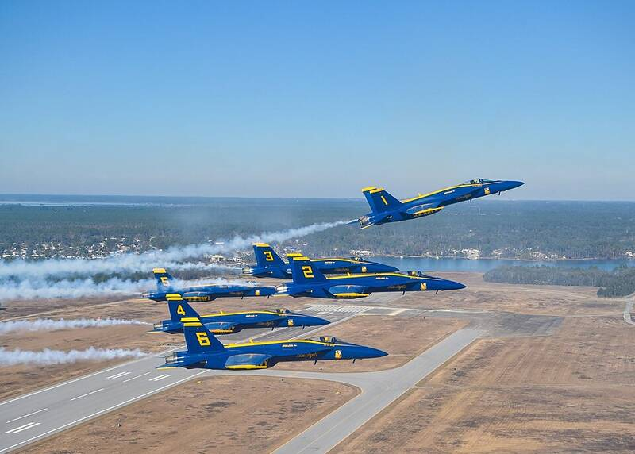

NAS Pensacola Florida Florida · Military base · 30.352°N, 87.322°W The Blue Angels over Naval Air Station Pensacola. Photo: U.S. Navy Blue Angels, CC0 (source) The cradle of naval aviation. Open in the interactive Watcher